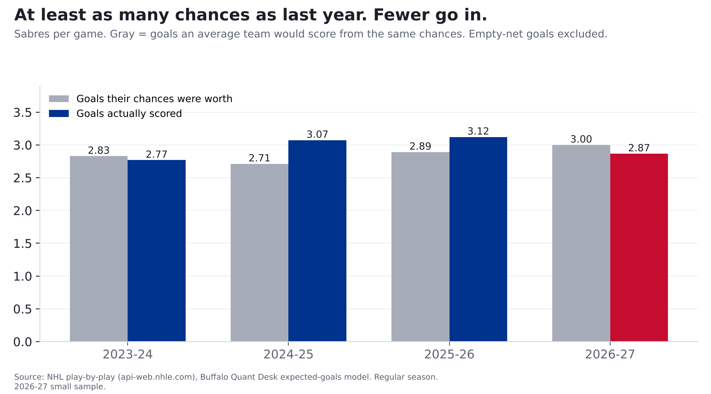

As many chances, fewer goals: too early to call it a slump
Buffalo is creating as many chances as last year. Fewer are going in, and it isn't about who left.
Finding: The Sabres are creating at least as many good scoring chances as last season, but they're scoring 2.87 goals a game instead of 3.12. It isn't because Alex Tuch left. The players who are still here were scoring well above their chances last year, and this year they're a little below. Fifteen games in, that's within normal ups and downs.
2026-27 is 15 games (7-5-3), a small sample.

Chances vs. goals
Where "chances" comes from: the NHL logs where every shot is taken and what kind it is. Across 336,462 shots, those from within 10 feet went in 13.8% of the time; from 60 feet or more, 0.8%. Our model gives every shot those odds, and adding them up gives expected goals: what an average team (or goalie) would produce from the same shots. The full explanation is in our lead Sabres story, The 50-win mirage.
This season the Sabres' chances are worth 3.00 goals a game, about the same as last season (2.89) and right at the league average (2.99). The chances are there. Fewer are going in.
It isn't Alex Tuch
Tuch was last season's best finisher: 32 goals on chances an average shooter turns into about 23. He now plays in Washington. But the other players who are gone mostly scored below their chances, so as a group the departures were roughly a wash (49 goals on chances worth about 48).
The finishing that drove last season came from players who are still on the team. They scored about 17 more goals than their chances were worth. This season they're about 4 below.
Last season's best finishers
| Player | Goals | Goals expected from his chances | Difference | No longer with Buffalo? |
|---|---|---|---|---|
| Alex Tuch | 32 | 23 | +9 | Yes |
| Tage Thompson | 37 | 30 | +7 | |
| Mattias Samuelsson | 12 | 6 | +6 | |
| Noah Ostlund | 11 | 7 | +4 | |
| Jason Zucker | 24 | 21 | +3 |
This season's leading goal scorers
| Player | Goals | Goals expected from his chances | Difference |
|---|---|---|---|
| Tage Thompson | 10 | 7 | +3 |
| Jack Quinn | 8 | 6 | +2 |
| Noah Ostlund | 4 | 4 | -0 |
| Olen Zellweger | 3 | 2 | +1 |
| Josh Norris | 2 | 3 | -1 |
Tage Thompson and Jack Quinn are still finishing above their chances. The shortfall is spread through the rest of the lineup.
Is it a slump or bad bounces?
Too early to tell. The returning players have taken 552 shots this season. Over that many shots, luck alone can swing the total by about 6 goals either way. They're about 4 below. That's normal. And finishing is one of the things that doesn't carry over well from one season to the next.
What to expect: if the chances keep coming, goals should pick up, though probably not to last season's pace, which was itself unusually hot.
For the stat-heads
- Expected goals (xG) come from our own model: gradient-boosted trees on shot distance, angle, type, rebounds, rush chances and manpower, trained on 336,462 unblocked shots from 2023-24 to 2025-26. Tested on a season it never saw (2025-26), it beat a distance-and-angle model (AUC 0.77 vs 0.71). Empty-net shots are excluded. Values for 2023-24 to 2025-26 come from a model fit on those seasons; 2026-27 is out of sample. Each season is rescaled so league expected goals equal league goals (the raw model ran +3.0% hot in 2025-26), so above-expected numbers are relative to that season's league average.
- Team xG/game: 2.89 (2025-26), 3.00 (2026-27); league 2.99. Goals/game 3.12 to 2.87.
- Returning skaters G-xG: +17.4 (2025-26), -3.8 (2026-27) on 552 unblocked shots, 42.8 xG; binomial SD 6.1. Departed: 13 skaters, 49 G on 47.5 xG (+1.5). Tuch +8.9.
- Year-to-year correlation of team shooting %: 0.32.
- "No longer with Buffalo" = dressed for Buffalo in 2025-26 and not yet in 2026-27, from game rosters; some may be injured or in the minors. Individual xG counts a player's own unblocked shots. Empty nets excluded.